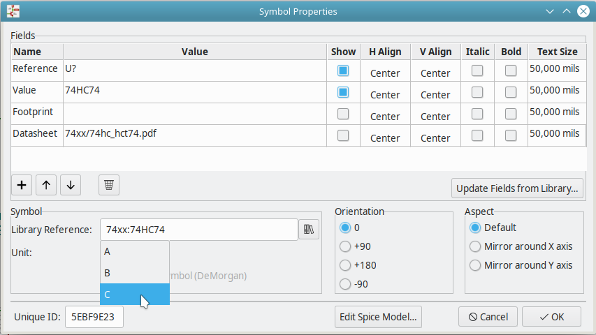

What to do, when a source has a missing distant connection?
You might be looking at this help, because you got an error message like this one:
This happens, because one of the components in your circuit needs a connection that it does not have. Usually, the missing connection(s) are the power supply connections. These connections often come from a different block of the same type. So the easiest way to solve this is to:
copy that component, and place the copy at a free space in the circuit.
select the copy, and open the "edit-properties" window in eeschema, see image below.
select the unit. Usually the supply block is the last one in the list of available units, as in the image below.
press okay. The copied component should change its form, and only have the power supply pins.
connect these pins.
save the changed circuit in eeschema, and reload the circuit in the AniCAD

Distant connections in ".alib"-files
The following text is for developers, who want to write new ".alib"-files or want to add Components to existing ones.
If you have general questions about the ".alib"-files, then check out the overview about alib-libraries. If you want to know how to write ".alib"-files, then you might want to read this manual
What are distant connections?
Distant Connections (short "distconns") are connections, which do connect directly to an other component, without having to connect them in the schematic file.
For example in this image, there there are three logical components:
The one on the left, marked as "74 Source" and
The two on the right, the "NOR" and "NAND" components, marked as "74HC02" and as "74HC00".
Here the Source supplies the VCC and GND pin for the other two components.
The Source component provides the supply voltage at its connection "VCC" and the ground connection "GND" to the other two components. Therefor the source component has two invisible connections - one for VCC and one for GND - and each of the two logical components also have two invisible connections each, which are connected to VCC and to GND.
This way, the two logical components "know" which is their supply voltage and can calculate their correct output voltage. Without these two distant connections, the logical components could not adress their source, or they would need more "normal" connections.
How are distant connections written in the libraries?
In the ".alib"-library, you can create a new distconn with a SET_CONNECTION statement.
The standard-style to do write this statement in the drawing section is:
<SET_CONNECTION [conn74_vcc] 0 -500> //creates distant connection named "[conn74_vcc]" at position (x=0 y=-500)
<SET_CONNECTION [conn74_gnd] 0 500> // creates distant connection named "[conn74_gnd]" at position (x=0 y=500)
These distconns can be accessed by an other component with a GET_CONNECTION statement:
<.PortSym GET_CONNECTION [conn74_vcc]> // uses "[conn74_vcc]"
<.PortSym GET_CONNECTION [conn74_gnd]> // uses "[conn74_gnd]"
The local, invisible connections can be used in the spice section the same way as any other connection:
X_[name] [pinA] [pinB] [conn74_vcc] [conn74_gnd] [pout] 74HC02> // Spice-text of a component of type 74HC00 or 74HC02
Within the DRAW - ENDDRAW statements in the symbol section, you also can write the distant connections in the eeschema-style:
SET_CONNECTION [connm4] 0 -400 //creates a distant connection named [connm4]
X GET_CONNECTION [connm4] //uses that distant connection.